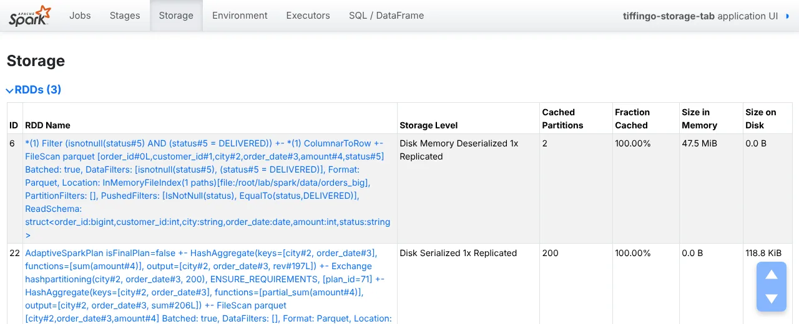

Before you start: Lesson 2.3 (why every action recomputes) and 1.3 (executors).
After Module 2, Kabir has a new habit: he adds .cache() to every DataFrame. His morning report on TiffinGo’s five million orders got faster. Then one night the job died with “Command exited with code 52” on every executor, and nobody could explain why caching, of all things, broke it.
K> Sir, caching made things faster. How can it crash a job?
A> Cached data takes executor memory, the same memory your tasks need to run. Spark offers several storage levels: memory only, memory and disk, disk only, serialised or not, replicated or not. Pick the wrong one, or cache data in partitions too big for the executor, and you trade speed for failures.
R> So when should we cache, and how?
A> Cache only what several actions reuse, choose a storage level that fits, check the Storage tab, and unpersist when done. Today we measure every level on our cluster with five million orders, look at the Storage tab, and reproduce Kabir’s crash. All outputs are real (Spark 4.3.0).
2 Definition
Persistence and storage levels
Formal definition (write this in exams)
Persistence (caching) instructs Spark to keep the computed partitions of an RDD or DataFrame on the executors after the first action that computes them, so later actions read them instead of recomputing the lineage. persist(level) chooses a storage level: whether to use memory, local disk or off-heap memory, whether to store objects serialised, and how many replicas to keep; cache() uses the default level (MEMORY_AND_DISK for DataFrames and Datasets, stored in Spark’s compressed in-memory columnar format; MEMORY_ONLY for RDDs). Cached blocks share executor memory with task execution and are evicted in least-recently-used order under pressure; with MEMORY_ONLY evicted partitions are recomputed, with MEMORY_AND_DISK they are written to local disk. Persistence is lazy, is lost with its executor, and should be released with unpersist().
In simple words
cache() or persist() keeps data on the executors after it is first computed, so the next actions are faster. You choose where: memory, disk or both. It uses memory that tasks also need, so cache only what you reuse and remove it when finished.
Words you’ll meet in this lesson
cache()persist() with the default storage level.
persist(level)Keep data with a chosen storage level.
Storage levelMemory / disk / off-heap, serialised or not, replicas.
SerialisedStored as bytes: smaller, but costs CPU to read.
EvictionRemoving cached blocks when memory is needed (LRU).
Storage tabSpark UI page listing cached data, sizes and fractions.
unpersist()Remove cached data from executors.
Exit code 52An executor JVM died from OutOfMemoryError.
Storage levels
Level
Memory
Disk
If memory is full
Use when
MEMORY_ONLY
yes
no
Partitions not cached; recomputed when needed
Fits comfortably; cheap to recompute
MEMORY_AND_DISK (DataFrame default)
yes
yes
Overflow written to local disk
Expensive to recompute; most cases
DISK_ONLY
no
yes
—
Large, expensive results; memory needed for tasks
MEMORY_ONLY_2, MEMORY_AND_DISK_2
yes
(yes)
Two copies on two executors
Fast recovery matters (spot nodes)
OFF_HEAP
off-heap
no
Needs off-heap memory enabled
Reduce GC pressure; advanced
LEVELS> Caching at three levels
L1> Keeping cooked food on the counter
Without caching, every new order cooks the dish from scratch.
cache() keeps a cooked batch on the counter (memory); if the counter is full, some goes to the fridge (disk).
An overfull counter leaves no room to cook: the kitchen stops.
L2> The API
df.cache() = persist() with the default level: MEMORY_AND_DISK for DataFrames (deserialised, columnar), MEMORY_ONLY serialised for PySpark RDDs.
persist(StorageLevel.X): MEMORY_ONLY, MEMORY_AND_DISK, DISK_ONLY, the _2 variants (two replicas), OFF_HEAP.
Caching is lazy: the first action fills it. SQL CACHE TABLE is eager; CACHE LAZY TABLE is not. Release with unpersist(), UNCACHE TABLE or spark.catalog.clearCache().
L3> What the lab showed
The second query took 6.7 s uncached and 2.1–2.7 s with any storage level; filling the cache made the first query slower (21–29 s vs 15 s).
5,000,000 rows with 128-character notes needed 651 MiB of cache over 32 partitions.
The same data in only 4 partitions killed every 1 GiB executor while caching (exit code 52 = OutOfMemoryError); the job was aborted after 4 attempts.
/LEVELS
EXAM> “cache() vs persist()?” cache() is persist() with the default level (MEMORY_AND_DISK for DataFrames, MEMORY_ONLY for RDDs). persist() lets you choose: MEMORY_ONLY, MEMORY_AND_DISK, DISK_ONLY, replicated _2 levels or OFF_HEAP. Both are lazy and need an action to fill; release with unpersist().
3 Types and ways to use it
When to cache, and when not to
Situation
Cache?
Why
Same DataFrame used by several actions or reports
Yes
Avoid repeated reads and transformations
Iterative algorithms (ML, graphs)
Yes
Many passes over the same data
Interactive exploration in a notebook
Yes, then unpersist
Many small queries on one dataset
Used once
No
Filling the cache only costs time and memory
Cheap to recompute (simple filter on Parquet)
Usually no
Reading Parquet can be as fast as reading the cache
Bigger than the cluster’s memory
DISK_ONLY or write to Parquet
Avoid eviction storms and OOM
Must survive executor loss or long lineage
Checkpoint (3.3) or write out
Cache is lost with its executor
WARN> A cache is not free. In our lab, the first query with caching took 21–29 s against 15 s without, because Spark had to build the cache. If a dataset is used once, or is as cheap to read from Parquet as from the cache, caching makes the job slower and steals memory from tasks.
4 Step by step
Measuring every storage level
All outputs are real: PySpark 4.3.0 in local mode (Steps 1–3, 6) and on our standalone cluster with two executors of 2 cores and 1 GiB (Steps 4–5). Data: orders_big, 5,000,000 orders.
Step 1 · cache() is lazy, and has a default level
df = orders.where("status = 'DELIVERED'").cache()
print(df.storageLevel)
print(len(storage())) # entries in the UI's /storage/rdd API
df.count()
s = storage()[0]
print(s["numCachedPartitions"], s["numPartitions"], s["memoryUsed"])
1) DataFrame cache() level : Disk Memory Deserialized 1x Replicated
cached blocks before any action: 0
after count(): 2 of 2 partitions, 47.5 MiB in memory
storage name: *(1) Filter (isnotnull(status#5) AND (status#5 = DELIVERED))…
Calling cache() stored nothing: zero cached entries until count() ran. A DataFrame’s default level is Disk Memory Deserialized (MEMORY_AND_DISK). The 4.75 million delivered orders took only 47.5 MiB: DataFrames are cached in a compressed columnar format, much smaller than Python objects would be.
Step 2 · RDD defaults and persist()
rdd = sc.parallelize(range(10)).cache()
print(rdd.getStorageLevel())
p = orders.persist(StorageLevel.DISK_ONLY)
print(p.storageLevel)
For PySpark RDDs, cache() means MEMORY_ONLY with serialised (pickled) data: Python objects are always stored as bytes on the JVM side. persist() takes any StorageLevel; here DISK_ONLY writes the partitions to the executors’ local disks.
Step 3 · The Storage tab
d = o.where("status = 'DELIVERED'").cache(); d.count()
c = o.groupBy("city", "order_date").agg(F.sum("amount").alias("rev")).persist(StorageLevel.DISK_ONLY); c.count()
Spark UI → Storage

Real screenshot: the Storage tab. The filtered orders (MEMORY_AND_DISK, 2 partitions, 100% cached, 47.5 MiB in memory) and an aggregation persisted with DISK_ONLY (200 partitions, 118.8 KiB on disk).Every cached dataset appears with its level, number of cached partitions, fraction cached and sizes in memory and on disk. A fraction below 100% means some partitions did not fit and will be recomputed (MEMORY_ONLY) or read from disk. The aggregated DataFrame kept 200 partitions, the default spark.sql.shuffle.partitions, all tiny: worth a coalesce before caching.
Step 4 · Every level on the cluster
base = (spark.read.parquet("/data/orders_big").repartition(32)
.withColumn("note", F.concat(F.sha2(F.col("order_id").cast("string"), 256),
F.sha2(F.concat_ws("-", "order_id", "customer_id"), 256))))
def q(df):
return df.where("status = 'DELIVERED'").groupBy("city").agg(F.sum("amount")).collect()
for name in ["MEMORY_ONLY", "MEMORY_AND_DISK", "DISK_ONLY"]:
df = base.persist(getattr(StorageLevel, name))
q(df); q(df) # fill, then reuse (both timed)
df.unpersist(blocking=True)
NONE 1st 15.3 s 2nd 6.7 s
MEMORY_ONLY 1st 29.0 s 2nd 2.7 s cached 32/32 partitions memory 651.2 MiB disk 0.0 MiB
MEMORY_AND_DISK 1st 21.5 s 2nd 2.2 s cached 32/32 partitions memory 651.2 MiB disk 0.0 MiB
DISK_ONLY 1st 20.7 s 2nd 2.1 s cached 32/32 partitions memory 0.0 MiB disk 651.2 MiB
We added a 128-character note per order (random-looking hashes, so it does not compress) to make the data realistic in size: 651 MiB cached over 32 partitions. Without a cache, the second query re-read and re-hashed everything (6.7 s). With any level, it took 2.1–2.7 s. DISK_ONLY was as fast as memory here because the lab’s disks are fast and the data was read sequentially; on busy clusters memory usually wins. Filling a cache always cost extra the first time.
Step 5 · How caching crashed every executor
base = spark.read.parquet("/data/orders_big").withColumn("note", …) # only 4 partitions
df = base.persist(StorageLevel.MEMORY_ONLY)
q(df)
NONE 1st 8.4 s 2nd 1.9 s
SparkException: Job aborted due to stage failure: Task 3 in stage 8.0 failed 4 times, most recent failure: Lost task 3.4 in stage 8.0 (TID 29) (172.19.0.4 executor 2): ExecutorLostFailure (executor 2 exited caused by one of the running tasks) Reason: Command exited with code 52
ERROR TaskSchedulerImpl: Lost executor 0 on 172.19.0.5: Command exited with code 52
ERROR TaskSchedulerImpl: Lost executor 1 on 172.19.0.4: Command exited with code 52
ERROR TaskSchedulerImpl: Lost executor 2 on 172.19.0.4: Command exited with code 52
ERROR TaskSchedulerImpl: Lost executor 3 on 172.19.0.5: Command exited with code 52
ERROR TaskSetManager: Task 3 in stage 8.0 failed 4 times; aborting job
Kabir’s crash, reproduced. With the same data in only 4 partitions (1,250,000 rows each), every task had to build a cached block of about 160 MiB inside a 1 GiB executor, next to Parquet decoding and hashing. Executors died with exit code 52, Spark’s code for OutOfMemoryError; replacements died too, and after 4 failed attempts the job was aborted. Smaller partitions (Step 4), a disk level, more executor memory or not caching at all would each have avoided it.
Step 6 · SQL caching and cleaning up
spark.sql("CACHE TABLE delivered AS SELECT * FROM parquet.`orders_big` WHERE status = 'DELIVERED'")
spark.sql("CACHE LAZY TABLE lazy_t AS SELECT city FROM parquet.`orders_big`")
spark.catalog.isCached("delivered")
df.unpersist(); p.unpersist(); spark.sql("UNCACHE TABLE delivered"); spark.catalog.clearCache()
storage name: *(1) Filter (isnotnull(status#5) AND (status#5 = DELIVERED))…
4) CACHE TABLE (eager): cached entries now 2
CACHE LAZY TABLE: cached entries now 2
isCached('delivered'): True
5) after unpersist/clearCache: cached entries 0
Unlike cache(), SQL CACHE TABLE is eager: it runs immediately (one new cached entry). CACHE LAZY TABLE waits for the first query. Release caches explicitly: unpersist() for DataFrames and RDDs, UNCACHE TABLE for tables, clearCache() for everything. Unused caches otherwise stay until memory pressure evicts them.
+ Going deeper
Every StorageLevel, side by side
Lab mein humne PySpark 4.3 ke saare StorageLevel constants print kiye. Dhyaan do: PySpark mein koi _SER level nahi hai — Python data hamesha serialized hi store hota hai.